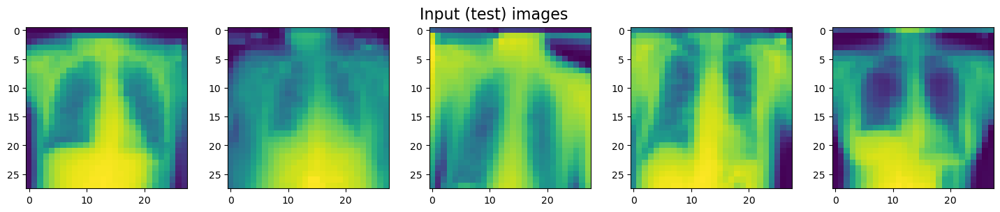
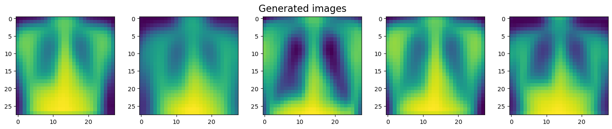
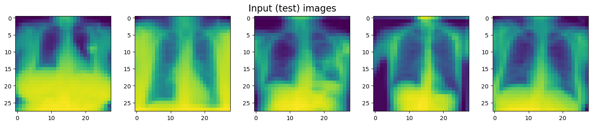
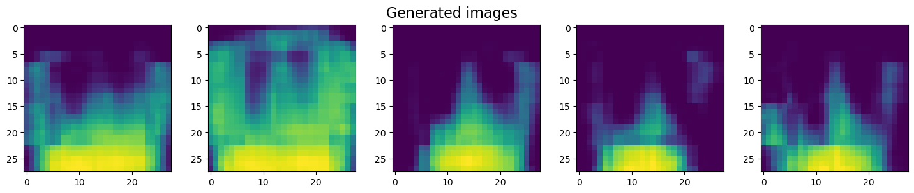

Convolutional VAEs#
Linear VAEs#
import matplotlib.pyplot as plt
import medmnist # pip install medmnist ก่อน
from medmnist import INFO
import numpy as np
import torch
import torch.nn as nn
from torch.utils.data import DataLoader
import torchvision.transforms as transforms
# Set up device
device = 'cpu'
if torch.cuda.device_count() > 0 and torch.cuda.is_available():
print("Cuda installed! Running on GPU!")
device = 'cuda'
else:
print("No GPU available!")
device = 'cpu'
No GPU available!
# Get the information about the MedMNIST dataset
info = INFO['chestmnist']
info
{'python_class': 'ChestMNIST',
'description': 'The ChestMNIST is based on the NIH-ChestXray14 dataset, a dataset comprising 112,120 frontal-view X-Ray images of 30,805 unique patients with the text-mined 14 disease labels, which could be formulized as a multi-label binary-class classification task. We use the official data split, and resize the source images of 1×1024×1024 into 1×28×28.',
'url': 'https://zenodo.org/record/6496656/files/chestmnist.npz?download=1',
'MD5': '02c8a6516a18b556561a56cbdd36c4a8',
'task': 'multi-label, binary-class',
'label': {'0': 'atelectasis',
'1': 'cardiomegaly',
'2': 'effusion',
'3': 'infiltration',
'4': 'mass',
'5': 'nodule',
'6': 'pneumonia',
'7': 'pneumothorax',
'8': 'consolidation',
'9': 'edema',
'10': 'emphysema',
'11': 'fibrosis',
'12': 'pleural',
'13': 'hernia'},
'n_channels': 1,
'n_samples': {'train': 78468, 'val': 11219, 'test': 22433},
'license': 'CC BY 4.0'}
DataClass = getattr(medmnist, info['python_class'])
# Load the data
train_dataset = DataClass(split='train', transform=transforms.ToTensor(), download=True)
test_dataset = DataClass(split='test', transform=transforms.ToTensor(), download=True)
pil_dataset = DataClass(split='train', download=True)
# Encapsulate data into the data loader form
batch_size = 32
train_loader = DataLoader(dataset=train_dataset, batch_size=batch_size, shuffle=True)
train_loader_at_eval = DataLoader(dataset=train_dataset, batch_size=2*batch_size, shuffle=False)
test_loader = DataLoader(dataset=test_dataset, batch_size=2*batch_size, shuffle=False)
Using downloaded and verified file: C:\Users\Khuna\.medmnist\chestmnist.npz
Using downloaded and verified file: C:\Users\Khuna\.medmnist\chestmnist.npz
Using downloaded and verified file: C:\Users\Khuna\.medmnist\chestmnist.npz
# Get a training batch
images, labels = next(iter(train_loader))
# torch.Size(num_images, num_channels, height_image, width_image)
print("Batch shape:", images.shape)
# Plot the first image in the batch
fig, ax = plt.subplots(figsize=(4, 4))
im = ax.imshow(images[0].squeeze())
fig.colorbar(im);
Batch shape: torch.Size([32, 1, 28, 28])
# Create an encoder and a decoder to be used in a VAE
class Encoder(nn.Module):
def __init__(self):
super(Encoder, self).__init__()
self.layer1 = nn.Sequential(nn.Linear(784, 512), nn.ReLU())
self.layer2 = nn.Sequential(nn.Linear(512, 256), nn.ReLU())
self.layer3 = nn.Sequential(nn.Linear(256, 128), nn.ReLU())
self.layerMu = nn.Sequential(nn.Linear(128, 16))
self.layerSigma = nn.Sequential(nn.Linear(128, 16))
def forward(self, x):
'''
Parameters
----------
x : float
Input image
'''
x = x.flatten(start_dim=1) # Reshape the input into a vector (nD to 1D)
x = self.layer1(x)
x = self.layer2(x)
x = self.layer3(x)
mu = self.layerMu(x) # Turn the output of the Encoder into Mu
sigma = torch.exp(self.layerSigma(x)) # Exponential activation ensures the positivity for Sigma
return mu, sigma
class Decoder(nn.Module):
def __init__(self):
super(Decoder, self).__init__()
self.layerLatent = nn.Sequential(nn.Linear(16, 128))
self.layer1 = nn.Sequential(nn.Linear(128, 256), nn.ReLU())
self.layer2 = nn.Sequential(nn.Linear(256, 512), nn.ReLU())
self.layer3 = nn.Sequential(nn.Linear(512, 784), nn.Sigmoid())
def forward(self, z):
'''
Parameters
----------
z : float
Latent variable
'''
z = self.layerLatent(z)
z = self.layer1(z)
z = self.layer2(z)
z = self.layer3(z)
z = z.reshape((-1, 1, 28, 28)) # Reshape the vector into a (28x28) grayscale image
return z
# Create a VAE
class VAE(nn.Module):
def __init__(self, encoder, decoder):
super(VAE, self).__init__()
self.encoder = encoder
self.decoder = decoder
self.distribution = torch.distributions.Normal(0, 1) # Sample from N(0,1)
def get_latent(self, mu, sigma):
z = mu + sigma * self.distribution.sample(mu.shape).to(device) # Latent variable
latent_loss = (sigma**2 + mu**2 - torch.log(sigma) - 1/2).sum() # Latent loss
return z, latent_loss
def forward(self, x):
mu, sigma = self.encoder(x)
z, latent_loss = self.get_latent(mu, sigma) ## (2) Generate the latent vector sample
x_hat = self.decoder(z)
return x_hat, latent_loss
# Define a function for training the VAE
def train(vae, data, epochs=10):
optimizer = torch.optim.Adam(vae.parameters())
for epoch in range(epochs):
for batch, label in tqdm(data):
batch = batch.to(device)
optimizer.zero_grad()
x_hat, latent_loss = vae(batch)
generation_loss = ((batch - x_hat)**2).sum() # L2 loss
loss = generation_loss + latent_loss
loss.backward()
optimizer.step()
return vae # Return the trained VAE
# Define a function for training the VAE
def train(vae, data, epochs=10):
optimizer = torch.optim.Adam(vae.parameters())
for epoch in range(epochs):
for batch, label in data:
batch = batch.to(device)
optimizer.zero_grad()
x_hat, latent_loss = vae(batch)
generation_loss = ((batch - x_hat)**2).sum() # L2 loss
loss = generation_loss + latent_loss
loss.backward()
optimizer.step()
return vae # Return the trained VAE
# Initialise a VAE and train it
vae = VAE(Encoder(), Decoder()).to(device)
vae = train(vae, train_loader, 10)
---------------------------------------------------------------------------
KeyboardInterrupt Traceback (most recent call last)
Cell In[10], line 3
1 # Initialise a VAE and train it
2 vae = VAE(Encoder(), Decoder()).to(device)
----> 3 vae = train(vae, train_loader, 10)
Cell In[9], line 12, in train(vae, data, epochs)
10 loss = generation_loss + latent_loss
11 loss.backward()
---> 12 optimizer.step()
13 return vae
File ~\AppData\Local\Programs\Python\Python311\Lib\site-packages\torch\optim\optimizer.py:373, in Optimizer.profile_hook_step.<locals>.wrapper(*args, **kwargs)
368 else:
369 raise RuntimeError(
370 f"{func} must return None or a tuple of (new_args, new_kwargs), but got {result}."
371 )
--> 373 out = func(*args, **kwargs)
374 self._optimizer_step_code()
376 # call optimizer step post hooks
File ~\AppData\Local\Programs\Python\Python311\Lib\site-packages\torch\optim\optimizer.py:76, in _use_grad_for_differentiable.<locals>._use_grad(self, *args, **kwargs)
74 torch.set_grad_enabled(self.defaults['differentiable'])
75 torch._dynamo.graph_break()
---> 76 ret = func(self, *args, **kwargs)
77 finally:
78 torch._dynamo.graph_break()
File ~\AppData\Local\Programs\Python\Python311\Lib\site-packages\torch\optim\adam.py:163, in Adam.step(self, closure)
152 beta1, beta2 = group['betas']
154 self._init_group(
155 group,
156 params_with_grad,
(...)
160 max_exp_avg_sqs,
161 state_steps)
--> 163 adam(
164 params_with_grad,
165 grads,
166 exp_avgs,
167 exp_avg_sqs,
168 max_exp_avg_sqs,
169 state_steps,
170 amsgrad=group['amsgrad'],
171 beta1=beta1,
172 beta2=beta2,
173 lr=group['lr'],
174 weight_decay=group['weight_decay'],
175 eps=group['eps'],
176 maximize=group['maximize'],
177 foreach=group['foreach'],
178 capturable=group['capturable'],
179 differentiable=group['differentiable'],
180 fused=group['fused'],
181 grad_scale=getattr(self, "grad_scale", None),
182 found_inf=getattr(self, "found_inf", None),
183 )
185 return loss
File ~\AppData\Local\Programs\Python\Python311\Lib\site-packages\torch\optim\adam.py:311, in adam(params, grads, exp_avgs, exp_avg_sqs, max_exp_avg_sqs, state_steps, foreach, capturable, differentiable, fused, grad_scale, found_inf, amsgrad, beta1, beta2, lr, weight_decay, eps, maximize)
308 else:
309 func = _single_tensor_adam
--> 311 func(params,
312 grads,
313 exp_avgs,
314 exp_avg_sqs,
315 max_exp_avg_sqs,
316 state_steps,
317 amsgrad=amsgrad,
318 beta1=beta1,
319 beta2=beta2,
320 lr=lr,
321 weight_decay=weight_decay,
322 eps=eps,
323 maximize=maximize,
324 capturable=capturable,
325 differentiable=differentiable,
326 grad_scale=grad_scale,
327 found_inf=found_inf)
File ~\AppData\Local\Programs\Python\Python311\Lib\site-packages\torch\optim\adam.py:384, in _single_tensor_adam(params, grads, exp_avgs, exp_avg_sqs, max_exp_avg_sqs, state_steps, grad_scale, found_inf, amsgrad, beta1, beta2, lr, weight_decay, eps, maximize, capturable, differentiable)
381 param = torch.view_as_real(param)
383 # Decay the first and second moment running average coefficient
--> 384 exp_avg.lerp_(grad, 1 - beta1)
385 exp_avg_sq.mul_(beta2).addcmul_(grad, grad.conj(), value=1 - beta2)
387 if capturable or differentiable:
KeyboardInterrupt:
images, labels = next(iter(test_loader)) # Get a test batch (64 images)
# Randomly choose 5 images generated by the trained VAE given a test batch
fig0, ax0 = plt.subplots(1, 5, figsize=(18, 3))
fig1, ax1 = plt.subplots(1, 5, figsize=(18, 3))
for n, idx in enumerate(torch.randint(0, 63, (5,))):
recon, _ = vae(images[idx].unsqueeze(0).cpu())
ax0[n].imshow(images[idx].squeeze())
ax1[n].imshow(recon.cpu().detach().squeeze())
fig0.suptitle("Input (test) images", fontsize=16)
fig1.suptitle("Generated images", fontsize=16);


Mode collapse#
จากภาพด้านบน จะเห็นได้ว่า VAE ของเราที่เทรนแล้ว สร้างภาพออกมาหน้าตาคล้าย ๆ กันหมด
Generative model มีแนวโน้มที่จะเข้าสู่ mode collapse นั่นคือ model จะสร้างภาพที่เป็นภาพเฉลี่ยของ dataset แทนที่จะสร้างภาพใหม่
Convolutional VAEs#
เพื่อให้ VAE สร้างภาพที่ซับซ้อนมากขึ้น เราต้องเพิ่ม complexity ของ VAE วิธีการหนึ่งที่ทำได้คือ เปลี่ยนจาก linear layer เป็น convolutional layer
ใน convolutional encoder เราจะ
เพิ่มจำนวน channel โดยใช้
torch.nn.Conv2dลด spatial dimension ของภาพโดยใช้
torch.nn.MaxPool2dกำหนด kernel size และ padding เพื่อให้ convoluted image มีขนาด \(2^n\) เพื่อให้ง่ายต่อการ subsampling
ใน convolutional decoder เราจะ
ลดจำนวน channel โดยใช้
torch.nn.Conv2dเพิ่ม spatial dimension ของภาพโดยใช้
torch.nn.Upsampleเอา padding ออกจาก output
# Create a convolutional encoder and a convolutional decoder to be used in a VAE
class Conv_Encoder(nn.Module):
def __init__(self):
super(Conv_Encoder, self).__init__()
self.layer1 = nn.Sequential(
nn.Conv2d(1, 20, kernel_size=3, padding=3), # Input มีขนาด 28x28 มี padding=3 กลายเป็น 34x34
# 34x34 ถูก convoluted กลายเป็น 32x32 (เพราะ kernel_size=3)
nn.GELU(),
nn.MaxPool2d(2) # 32x32 ถูก subsampled กลายเป็น 16x16
) # 28x28 => 16x16
self.layer2 = nn.Sequential(
nn.Conv2d(20, 40, kernel_size=3, padding="same"), # padding="same" ทำให้ convoluted image มีขนาดเท่า image เดิม
# นั่นคือ 16x16
nn.MaxPool2d(2) # 16x16 ถูก subsampled กลายเป็น 8x8
) # 16x16 => 8x8
self.layer3 = nn.Sequential(
nn.Conv2d(40, 60, 3, padding="same"),
nn.GELU(),
nn.MaxPool2d(2)
) # 8x8 => 4x4
self.layerMu = nn.Sequential(
nn.Conv2d(60, 120, 1),
) # 4x4 => 4x4
self.layerSigma = nn.Sequential(
nn.Conv2d(60, 120, 1),
) # 4x4 => 4x4
def forward(self, x):
'''
Parameters
----------
x : float
Input image
'''
x1 = self.layer1(x)
x2 = self.layer2(x1)
x3 = self.layer3(x2)
mu = self.layerMu(x3)
sigma = self.layerSigma(x3)
return mu, sigma
class Conv_Decoder(nn.Module):
def __init__(self):
super(Conv_Decoder, self).__init__()
self.layerLatent = nn.Sequential(
nn.Conv2d(120, 60, 1),
nn.GELU(),
nn.Upsample(scale_factor=2, mode='nearest')
) # 4x4 => 8x8
self.layer1 = nn.Sequential(
nn.Conv2d(60, 40, 3, padding='same'),
nn.GELU(),
nn.Upsample(scale_factor=2, mode='nearest')
) # 8x8 => 16x16
self.layer2 = nn.Sequential(
nn.Conv2d(40, 20, 3, padding='same'),
nn.GELU(),
nn.Upsample(scale_factor=2, mode='nearest')
) # 16x16 => 32x32
self.layer3 = nn.Sequential(
nn.Conv2d(20, 1, 3, padding='same'),
nn.GELU(),
nn.Sigmoid()
) # 32x32 => 32x32
def forward(self, z): # Custom pytorch modules should follow this structure
'''
Parameters
----------
z : float
Latent variable
'''
z = self.layerLatent(z)
z1 = self.layer1(z)
z2 = self.layer2(z1)
z3 = self.layer3(z2)
x_hat = z3[:, :, 2: -2, 2: -2] # Crop the output
return x_hat
# Initialise a convolutional VAE and train it
conv_vae = VAE(Conv_Encoder(), Conv_Decoder()).to(device)
conv_vae = train(conv_vae, train_loader, 10)
images, labels = next(iter(test_loader)) # Get a test batch (64 images)
# Randomly choose 5 images generated by the trained convolutional VAE given a test batch
fig0, ax0 = plt.subplots(1, 5, figsize=(18, 3))
fig1, ax1 = plt.subplots(1, 5, figsize=(18, 3))
for n, idx in enumerate(torch.randint(0, 63, (5,))):
recon, _ = conv_vae(images[idx].unsqueeze(0).cpu())
ax0[n].imshow(images[idx].squeeze())
ax1[n].imshow(recon.cpu().detach().squeeze())
fig0.suptitle("Input (test) images", fontsize=16)
fig1.suptitle("Generated images", fontsize=16);

